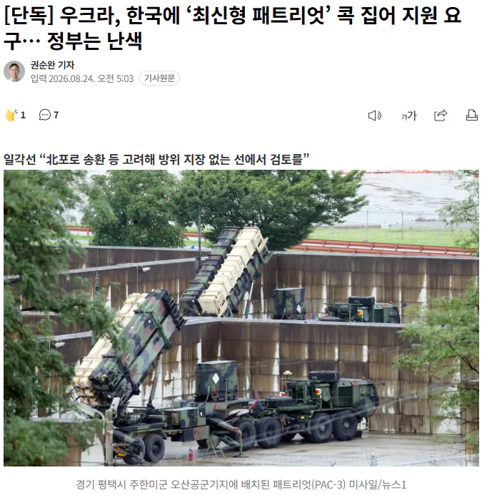
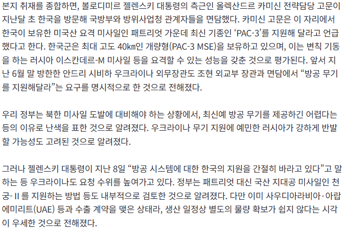

  누가 보면 맡겨놓은 줄 알겠네 ㅋㅋ https://n.news.naver.com/mnews/article/023/0003994508?sid=100
댓글
수집 당시 댓글 29개
블랙스톤 · 4 시간 전
러시아 지원해주고 석유나 받아오자 양심터진새끼들
함부르크훠궈복싱장 · 3 시간 전
Alchemy · 3 시간 전
포로로 장사하네 이새끼들 지금
든든뜨끈국밥 · 3 시간 전
무슨 포켓몬카드도아니고 ㅋㅋ
아카쿠 · 3 시간 전
맡겨놨냐고 시발새끼들아 유사국가 유사국가하면서 자조섞인 농담을 하지만 지네는 진짜 유사국가인새끼들이 뒤질라고 협박 외교를할려고 하네 한국이 좆으로 보이나
seska · 3 시간 전
북극항로 건도 있고 해서 정부 입장에서는 엄청 간 보고 빠져야함. 러시아하고 사이 안좋아 진것 만 해도 겁나 손해인데..
실례합니다 · 3 시간 전
빨갱이들 맡겨놨냐?ㅋㅋ
죽음의메아리 · 3 시간 전
맡겨놨나 거지새끼들이 ㅋㅋ
회사에서코고는중 · 3 시간 전
니꺼야? 개그맨새끼가 개그감을 잃었나
유루캠 · 3 시간 전
제시
아침밥 · 3 시간 전
우리가 모르는 베네핏을 우크라가 제공한 적이 있음? 왤케 자신만만하지?
끼룩끼룩이 · 3 시간 전
맡겨놨나 ㅋㅋㅋ 똥꼬 존나게 빨아도 모자랄판에 야스쿠니 신사참베에 개 지랄은 다해놓고선 달라고하면 줄꺼같음? 쏴주는건 가능할지도 ㅋㅋㅋㅋ
순애가필요해 · 3 시간 전
레드팀 출신이여서 더 괘씸
ParkTeria · 3 시간 전
그렇지 우리도 북한따위에 질수없으니 러시아에 현무 지원하자
띠띠빵빵빵 · 3 시간 전
러시아랑 전쟁 끝나고 다시 샤바샤바 잘 지내서 땡길꺼 줄 잘타야하는데 새끼들이 눈치가 음네
년째드립중 · 3 시간 전
뭐라노
김펭귄 · 3 시간 전
우크라이나 농경지 20만 헥타르 100년 임대해주면 생각은 해봄 ㅋㅋㅋ 씨발롬들아
Hmmmmmm · 2 시간 전
쓸만한 농지 다국적 기업에 이미 다 임차해줌
김펭귄 · 2 시간 전
그럼 할 필요 없네 씨발ㅋㅋㅋ
기묘한원나블 · 1 시간 전
받을 것도 없음. 이미 죄다 미국이랑 유럽 국가들에게 선점된 상태라.
그뢰이재됬냐 · 2 시간 전
진심으로 이새끼들 핵 없어서 다행인거 같음 있었으면 진짜 이란 저리가라였을듯
개중년 · 2 시간 전
있던 시절에도 가난해서 유지관리도 못하던 놈들임 ㅋㅋㅋㅋㅋㅋㅋ
루리웹 · 1 시간 전
구소련 붕괴되고 저기 많았는데 나 안가져! 했던애들임
도루묵이 · 2 시간 전
근데 얘네가 생각보다 잘 버텨서 중국이 다른 나라 침략하려는 거 좀 저지한 거 같긴 한디
오뒷세이아 · 2 시간 전
유럽에 지대공 미사일 만드는 나라가 한둘도 아닌데 왜 거기는 안주고 우리 보고 달라는 거냐
스네크 · 1 시간 전
아니 좆크라 시발새끼들아 그럼 뭔가를 달라고 할거면 받는 대신 무엇을 주겠다는 제안을 해야하는거 아니냐?
bisarro · 1 시간 전
일본이나 유럽한테 달라고 해야 함 우리는 우리 쓸거도 모자라
로스케빌런 · 39 분 전
뭐 우리 입장에서는 인도적 지원 물품 + 포탄 우회수출 정도면 도리를 다했다고 봄. 이미 피난민들이나 전선의 군인들은 구호품과 보급품의 혜택을 받고 있는데 굳이 저런 블러핑에 휘둘릴 필요는 없지. 꼬우면 그 지원마저 끊어버리면 그만.
하위헌스 · 15 분 전